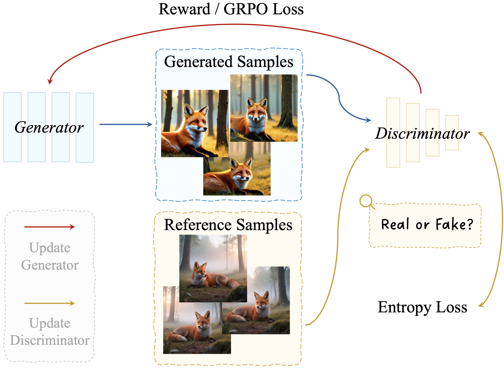
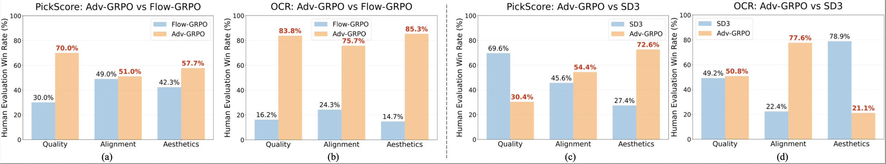
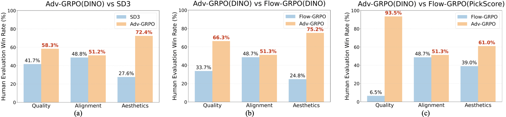
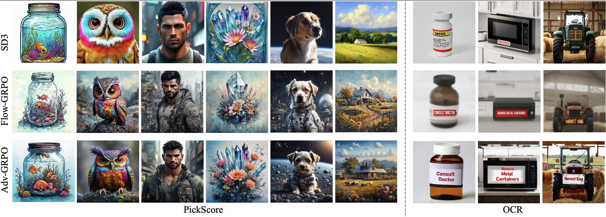
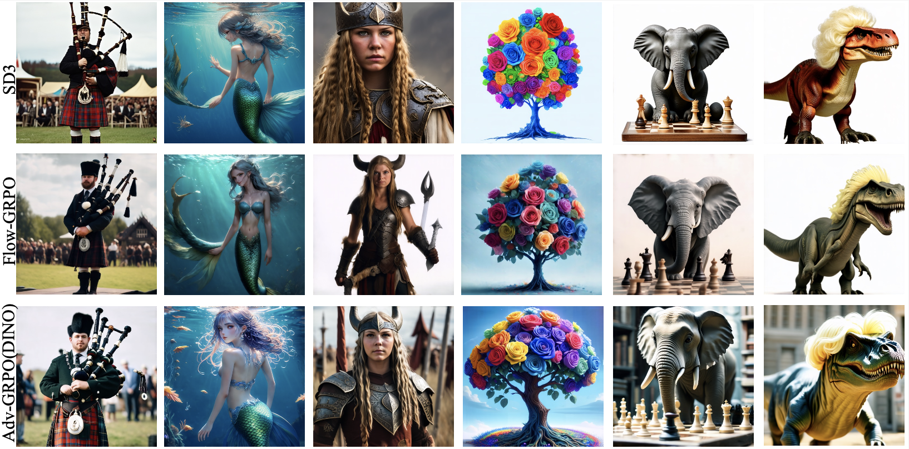
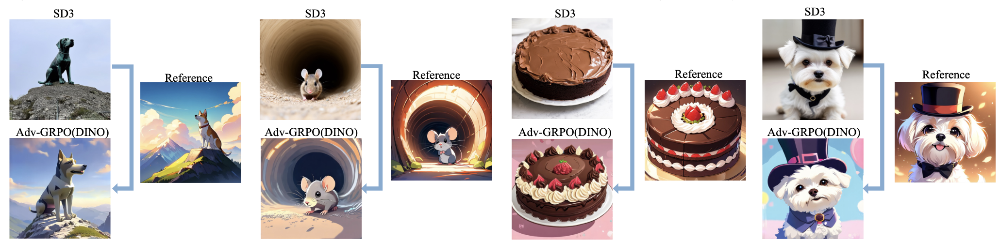

The Image as Its Own Reward: Reinforcement Learning with Adversarial Reward for Image Generation
1 Show Lab, National University of Singapore,
2 ByteDance
✉ Corresponding Author
Abstract
A reliable reward function is essential for reinforcement learning (RL) in image generation. Most current RL approaches depend on pre-trained preference models that output scalar rewards to approximate human preferences. However, these rewards often fail to capture human perception and are vulnerable to reward hacking, where higher scores do not correspond to better images. To address this, we introduce Adv-GRPO, an RL framework with an adversarial reward that iteratively updates both the reward model and the generator. The reward model is supervised using reference images as positive samples and can largely avoid being hacked. Unlike KL regularization that constrains parameter updates, our learned reward directly guides the generator through its visual outputs, leading to higher-quality images. Moreover, while optimizing existing reward functions can alleviate reward hacking, their inherent biases remain. For instance, PickScore may degrade image quality, whereas OCR-based rewards often reduce aesthetic fidelity. To address this, we take the image itself as a reward, using reference images and vision foundation models (e.g., DINO) to provide rich visual rewards. These dense visual signals, instead of a single scalar, lead to consistent gains across image quality, aesthetics, and task-specific metrics. Finally, we show that combining reference samples with foundation-model rewards enables distribution transfer and flexible style customization. In human evaluation, our method outperforms Flow-GRPO and SD3, achieving 70.0% and 72.4% win rates in image quality and aesthetics, respectively. Code and models will be released at https://github.com/showlab/Adv-GRPO.

Overview of our approach. Our method Adv-GRPO improves text-to-image (T2I) generation in three ways: 1) Alleviate Reward Hacking, achieving higher perceptual quality while maintaining comparable benchmark performance (e.g., PickScore, OCR), as shown in the top-left human evaluation panel; 2) Visual Foundation Model as Reward, leveraging visual foundation models (e.g., DINO) for rich visual priors, leading to overall improvements as shown in the middle-top human evaluation results; 3) RL-based Distribution Transfer, enabling style customization by aligning generations with reference domains.
Method

Pipeline of Adv-GRPO. The generator is optimized using the GRPO loss, while the discriminator is trained to distin- guish between generated samples and reference images, treated as negative and positive samples, respectively. The discriminator serves as a reward model to provide feedback for the generator.
Experiments

Human evaluation under PickScore- and OCR-based rewards. Our method Adv-GRPO improves image quality and aesthetics with PickScore reward in a), and for all metrics with OCR reward in b). Compared with the original model (SD3), PickScore reward trade-off aesthetic improvements with image quality degradation in c), OCR reward trade-off text-alignment from aesthetics degradation in d).
Human evaluation results under the visual foundation model (DINO) reward. Using a foundation model as the reward, our RL method improves image aesthetics, quality, and text alignment compared with the original SD3 model (a), and significantly outperforms Flow-GRPO under the DINO similarity reward (b) and PickScore reward (c).
Visualizations

Visualizations under PickScore (left) and OCR (right) rewards. Our method Adv-GRPO effectively mitigates reward hacking in both settings, producing images that better align with human perception while avoiding the degradation commonly observed in baseline reward-optimized models.
Visualizations using the DINO reward model. With adversarial DINO-based rewards, Adv-GRPO consistently improves overall visual fidelity, demonstrating clearer structure, richer texture, and more coherent semantics compared to baseline methods.
Figure 16. Additional style customization results. By leveraging anime reference samples, Adv-GRPO successfully transfers the base model's generation behavior into the target anime domain, achieving more faithful stylistic alignment guided by the provided examples.